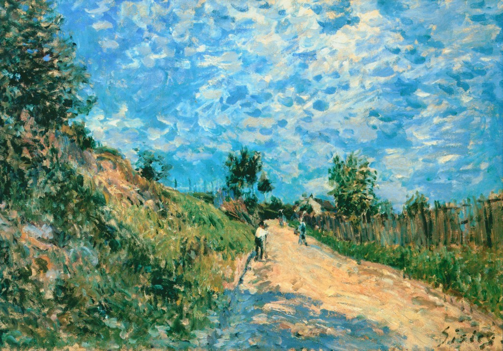

incentives, golden rule, kantian ethics, entropy
aug 16, 2026 v1
kantian ethics specifically universalizability seems to skew towards preventing downside/bad. an example is deboarding a plane, where maybe you'd benefit quite a bit from rushing forward vs waiting for your row, but if everyone were to do that it would be an awful experience. a little more difficult and maybe less attributable/identifiable as kant is to think of the inverse/converse where taking an action will improve an experience or life or whatever. an example also within the airport might be to wear 'lazy' clothes like pjs/shorts/sweats which is for most people the easy/default choice, versus choosing to wear something even slightly nicer such as jeans and a polo. that wearing the nicer outfit is better in some way is actually quite controversial - many people would argue fiercely for their own comfort. but the lack of consideration for the quality of experience of all people in the airport is exactly the reason there's a misalignment between what people want for themself and what people want to exist in the world. if you were to survey the people who prioritize their own comfort in the airport about their opinions on the architecture of new apartment buildings I think a large portion would have negative feelings. it might not be obvious, but these two opinions/perspectives are in conflict! or, they are wrong to think modern apartment architecture is not a result of their mindset about airport attire.
the golden rule partially addresses the upside of intentionality/action. do unto others as you would have them do unto you. take action in a specific manner in order to set an expectation of behavior for yourself and for others in the future. in theory a mojority of people living mostly by this principle is enough to maintain or slow the decay of a society. but people want society to improve overall. this means acting at a miniumum equally as well in whatever question or decision or possible action as you would expect of others. the obvious takeaway is 'be very nice' to others but this principle can actually be applied much more generally in all decision making.
individuals make decisions based on what they want in the moment or even what they think would be best for them long term, but not based on how they would like society to be overall. they don't understand there are misaligned incentives. related to the decline in external architecture is also a simplification of interior design. picture a beautiful home, it may contain hand carved wood, elegant stitching, stained glass - these are nearly unobtainable when building new houses. we are not drastically less capable people than when those things were more commonplace, but due to compounding decisions based on individual preferences (for example choosing the cheaper mass produced object vs more expensive handmade) demand for, in this case, nice things decreases and then the supply goes with it. you can see that demand - and as a result, supply - for things or ideas that make our world better in some way must be sustained by individuals consistently choosing to act on behalf of everyone, lest we lose them entirely.
more bluntly, in order to have nice things to buy in a capitalist economy people must buy them. actually the catalyst for some of these ideas was a video of DHH (ruby on rails/basecamp creator) saying that he bought a new ferrari because successful people should buy ferraris. to him and many others, including many kids, the existence of handcrafted, impeccably-engineered, attractive cars in the world is a good thing and lack thereof would be bad. but the attributes of successful/rich people in today's society are misaligned with this principle. they save money, invest it, don't spend more than necessary nor flaunt it. they buy modern houses which have square corners, not moulding, and have walls of concrete, not marble or mahogany. the decisions of those with options determine the future set of options, and choosing the simpler or cheaper or less impressive option declares a lack of demand for the alternative.
there are interesting implications beyond even consumerism that follow from common sense to absurd. take fertility. it's an increasinngly hot issue that most developed countries are now below replacement, meaning populations will inevitably decline and worse become older on average. the most persuasive reason to me why this might be happening over the long term and regardless of counter policies etc is just that we are richer than in the past and money can buy many things that provide happiness. kids also cost money, but there are significantly more difficulties that come with having a kid vs a BMW or a Four Seasons stay. however if you ask a representative group of people whether they generally enjoy seeing families around, or more broadly, do they like the idea of family, most would say yes. of course, it would be easier if other people had all the kids so they don't have to. but this isn't how the principle works. the individual must actively choose to manifest the world they like or want or miss even though it might require a sacrifice of some kind.
religion is an area where there may be less consensus on what is 'good'. lets examine a person I think is very common in the US. take someone who was raised religiously (beyond just culturally) Christian, but who lost his or her faith at some point. the natural consequence is that the children of this person will be raised with less to no religious Christianity. this seems to be the case: 78% of Americans identified as Christian in 2007 - it's 62% in 2024. assuming that person left the religion for eventual lack of faith, not some fundamental dislike, he or she should consider carefully whether or not to start the children's lives differently than how their own began, especially considering one is much more likely to end up religious if he or she is born religious. an objection may be that a parent cannot truthfully teach a religion he or she does not believe, but this is out of scope. it's just a word of caution based on the parable of Chesterton's fence:
There exists in such a case a certain institution or law; let us say, for the sake of simplicity, a fence or gate erected across a road. The more modern type of reformer goes gaily up to it and says, “I don’t see the use of this; let us clear it away.” To which the more intelligent type of reformer will do well to answer: “If you don’t see the use of it, I certainly won’t let you clear it away. Go away and think. Then, when you can come back and tell me that you do see the use of it, I may allow you to destroy it.”
any decision to change how one will raise his or her child as compared to how he or she was raised should be weighed, for it may remove something load bearing from one's own self. and to extrapolate, consistent acts of omission may compound and result in something eventually disappearing from culture.
the term 'high trust society' is commonly used when detailing the decline of countries and communities. in a high trust society, people can leave their property in public out of eyeshot with the expectation that it will be there when they return. they may also let their kids play and explore far from their house without concern. these are obviously good things, and yet decisions have been made which consequently make these actions untenable. if it were trivial to revert these sort of decisions, there would be no issue. the core problem however is that typically they are made to accomplish some form of 'progress' which is to be the new baseline, meaning that going back would feel tenfold regressive. this is a sort of entropy, like how it's easy to knock a jenga tower down but much more work to rebuild it, or how it's a constant battle to keep a room clean from dust and dirt. in one analogy action was the cause of chaos, in the other inaction.
one policy-level example of this is globalization, specifically trade between US and China. short term we 'want' for cheap goods, and it's nice that even the poor can afford things like smartphones. but I wonder if the initial conversations to enable this flow of trade considered whether we long term 'want' to become incapable of industrial production and have any kind of dependency on a non allied country.
this really isn't intended to be an anti-libertarian or anti-market argument. in fact, putting restrictions on the products we import or the minimum variability of apartment facade materials has the same result as people choosing not to purchase ferraris - eventual narrowing of the option set. an individual, community, or entity should instead implement the principles of maintenance and improvement - to strive for the continuation of things that are good.